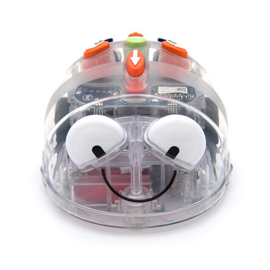

Hvað er Blue bot
Blue bot er skemmtilegur lítill róbóti sem hentar vel til að kenna börnum í leik- og grunnskólum grunnhugtök forritunar. Hægt er að forrita Blue-bot/Bjölluna bæði með því að ýta á takkana ofan á róbótanum og með spjaldtölvu. Forritunin getur því bæði verið með eða án skjás. Bjöllurnar eru skemmtilegar fyrir börn frá leikskólaaldri og uppúr, Þær geta ferðast um og því tilvalið að blanda saman sköpun og forritun með því að búa þrautabrautir eða jafnvel heilan heima fyrir þær með fjölbreyttum efniviði.
Blue-Bot er einfaldur í notkun. Hægt er að stjórna honum með hnöppunum á bakinu, með Blue-Bot appinu eða með Bluetooth og spjaldtölvu. Hann hreyfist í 15 cm skrefum og getur snúið sér um 90 gráður til vinstri eða hægri. Hægt er að nota sérstakar mottur og verkefnakort til að skipuleggja ferðir hans og leysa þrautir
Hægt er að kaupa alls kyns mottur fyrir Bjölluna bæði með myndum og glærar. Myndamotturnar eru til í ýmsum útfærslum, t.d. ævintýraeyjur, borgir, form o.fl. Einnig er hægt að fá glærar rúðustrikaðar mottur sem hægt er að leggja yfir aðrar myndir eins og t.d. landakort. Þar að auki er hægt að fá glærar mottur með plastvösum þar sem kennarar og nemendur geta sett sínar eigin myndir.
Í leikskólanum er hægt að tengja Bjöllurnar við þemavinnu og nota þær til að kenna liti, form, bókstafi og tölustafi. Einnig er gamna að láta þær ferðast um á landakortum og skoða bæði Ísland og heiminn. Motturnar með plastvösunum eru sniðugar í vinnu með orðaforða þar sem hægt að láta Bjöllurnar ferðast á milli staða og sækja alls kyns myndir, t.d. ná í tvo ketti, gula húfu, gamlan mann o.s.frv.